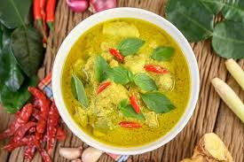
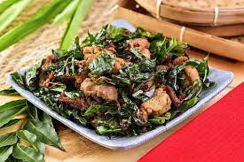
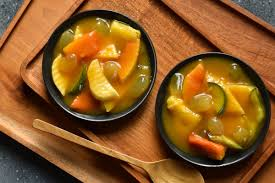
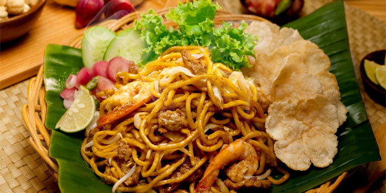

1. Kuah Masam Keu-Neung
Kuah Masam Keu-Neung memiliki kuah yang agak kekuningan dan memiliki rasa pedas dan asam yang menyegarkan, hampir mirip sama gulai asam pedeh. Bahan utama kuah masam keu-neung ada ikan, belimbing wuluh, asam sunti, dan cabe.
2. Ayam Tangkap Aceh
Ayam Tangkap adalah hidangan khas Aceh yang terbuat dari potongan ayam kampung yang digoreng. Bedanya dengan ayam goreng biasa, hidangan ini dibumbui daun pandan, daun kari, daun temurui atau daun salam koja. Ciri khas ayam ini ada di taburan cabai hijau dan daun temurui yang sudah digoreng kering.
3. Rujak Aceh
Rujak Aceh terbuat dari buah rumbia yang banyak ditemukan di Aceh, disajikan dengan saus rujak yang sangat khas dan beragam buah yang bakal bikin makin nikmat saat makannya.
4. Mie Aceh
Mie Aceh jadi salah satu ikon kuliner khas Aceh yang paling terkenal. Tersedia dalam dua varian, mie goreng dan mie kuah, makanan ini juga disajikan dengan berbagai pilihan topping
==> Kembali <==